Quick Navigation
Tanks
Paladin 
Paladins are the paragons of justice, sworn defenders of the weak, and protectors of the realm. They follow a strict code of honor and are often associated with knights in shining armor.
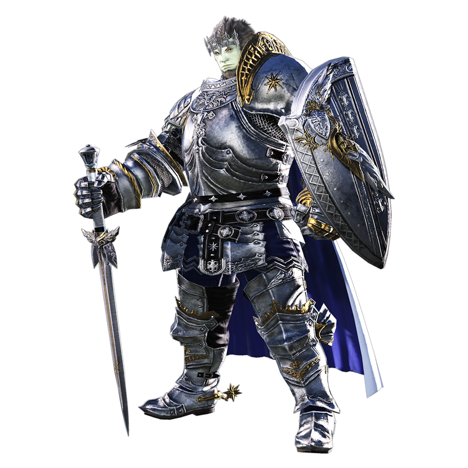Paladins excel in damage mitigation and party protection. They can cast shields on themselves and allies, and have a balanced mix of physical and magical defensive abilities.
Unlock QuestWarrior 
Warriors are fierce combatants who harness the primal rage within them to demolish their foes. They are often from tribal backgrounds, where strength and the will to survive are paramount.
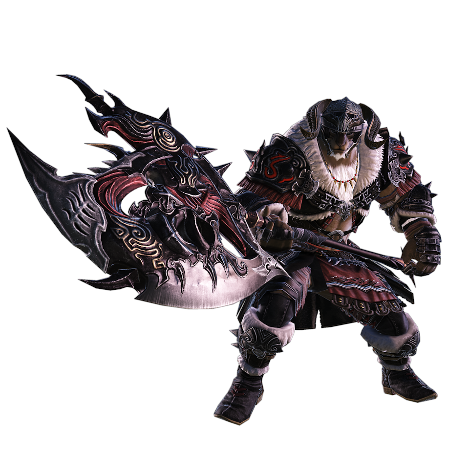Warriors specialize in high health pools and self-sustain. They can absorb massive amounts of damage and have abilities that allow them to recover health during battle.
Unlock QuestDark Knight 
Dark Knights are brooding warriors who embrace the darkness to fight against injustice and protect the oppressed. Their power comes from a forbidden source, which they use judiciously.
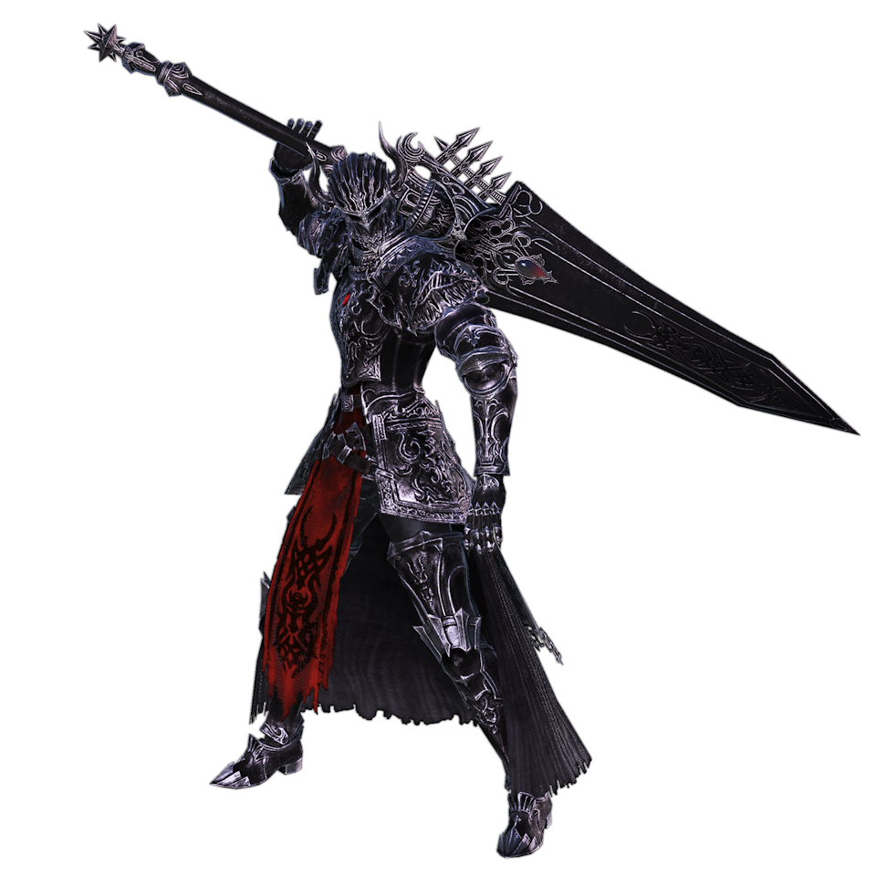Dark Knights use their health as a resource for powerful attacks and have a mix of magical and physical abilities. They excel in area-of-effect damage and have strong defensive cooldowns.
Unlock QuestGunbreaker 
Gunbreakers wield gunblades, a unique weapon that combines the blade with a firearm. They are mercenaries and soldiers of fortune, often with complex pasts and unmatched bravery.

Gunbreakers have a fast-paced playstyle, focusing on chaining abilities for high damage output while maintaining defense. They utilize cartridges to execute powerful attacks and combos.
Unlock QuestHealers
White Mage
White Mages are the embodiment of purity and healing. They call upon the power of nature and the light to mend wounds and purify evil. Their magic stems from a deep connection with the land.
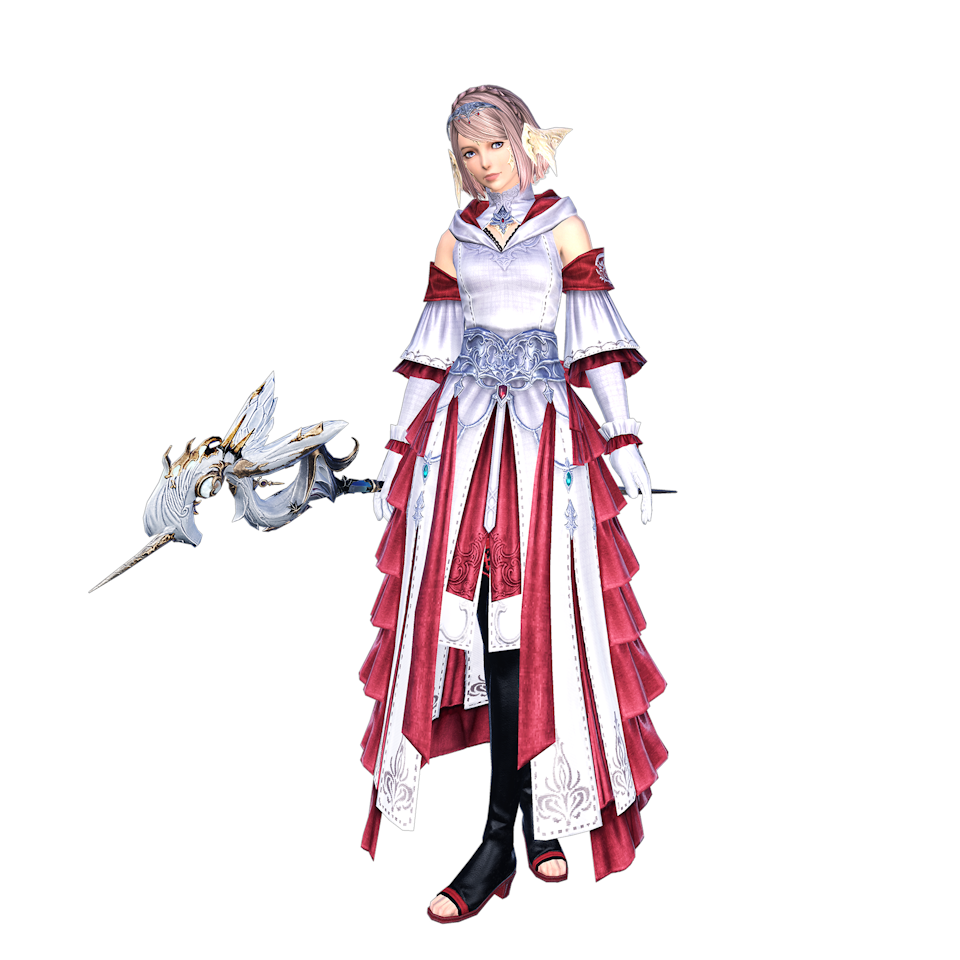White Mages specialize in powerful single-target and area heals. They have regenerative spells and can also deal significant damage with their Holy magic when needed.
Unlock QuestScholar 
Scholars are strategists and tacticians, using ancient knowledge and their fairy companions to aid allies. Their wisdom comes from extensive studies of ancient tomes and Nymian magic.

Scholars focus on damage prevention through shields and have a versatile toolkit for healing and damage mitigation. They rely on their fairy for additional healing support.
Unlock QuestAstrologian 
Astrologians harness the power of the stars to divine the future and support their allies. They are scholars of celestial movements and use their cards to bestow powerful buffs.

Astrologians can switch between healing stances and are known for their unique card system, which provides various buffs to party members. They balance between healing and granting critical support through buffs.
Unlock QuestSage
Sages are scholars who use nouliths, floating magical weapons, to protect and heal. Their knowledge comes from a blend of magic and science, offering a new approach to healing and barrier magic.
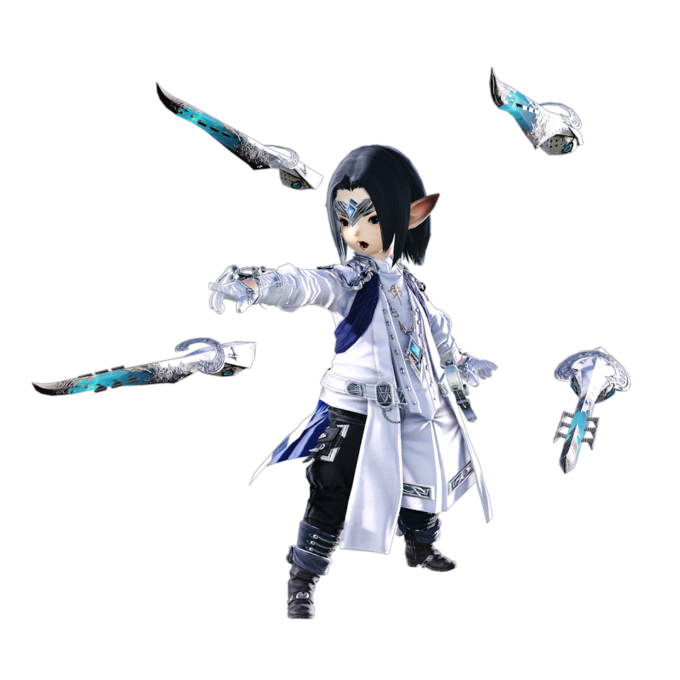Sages offer a dynamic playstyle focused on proactive barrier application and healing. They utilize their nouliths to deal damage, heal, and shield allies, making them versatile in combat situations.
Unlock QuestMelee DPS
Dragoon 
Dragoons are elite dragon hunters, wielding long spears to combat their ancient foes. They are known for their aerial assaults and their ability to leap high into the air.

Dragoons specialize in high burst damage and have a variety of jump attacks that make them highly mobile. They also provide valuable party-wide buffs through their Dragon Sight ability.
Unlock QuestMonk 
Monks are martial artists who channel their inner energy, or chakra, to deliver devastating blows. They follow a disciplined path, seeking physical and spiritual perfection.

Monks have a fast-paced playstyle, focusing on building and maintaining their Greased Lightning stacks for increased speed and power. They excel in single-target damage and have complex positional requirements.
Unlock QuestNinja 
Ninjas are stealthy assassins, utilizing speed and cunning to defeat their enemies. They employ ninjutsu, a form of magical martial arts, to enhance their abilities and summon elemental powers.
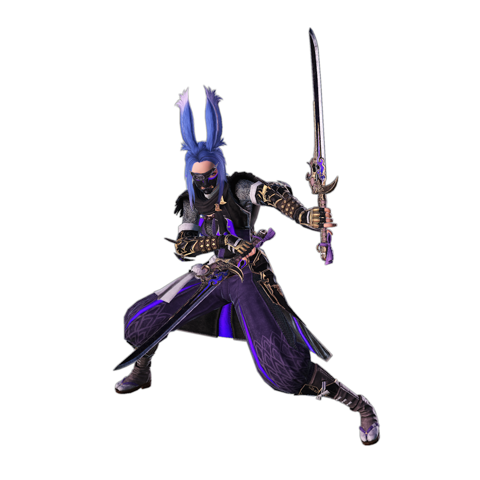Ninjas focus on fast-paced attacks and the strategic use of ninjutsu to deal damage and support their party. They have a unique mudra system that allows them to cast different spells based on combinations.
Unlock QuestSamurai 
Samurai are masters of the katana, living by the code of bushido. They seek perfection in their art, delivering precise and deadly strikes to their foes.
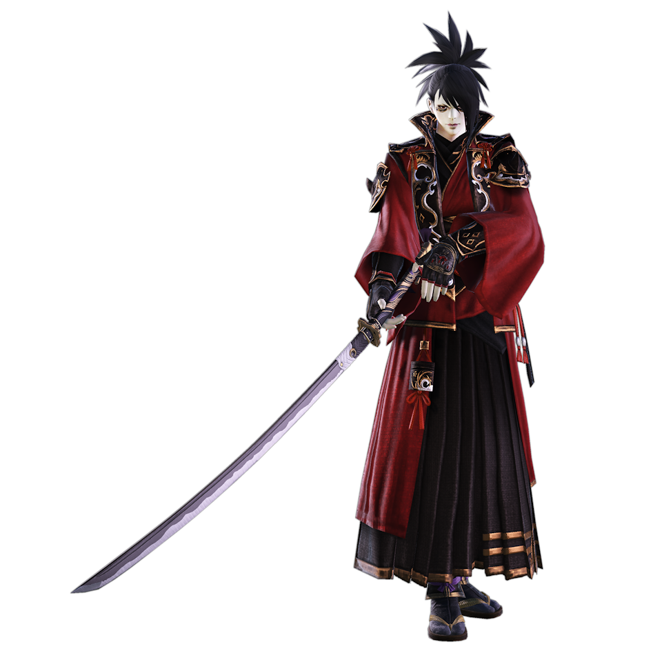Samurai have a straightforward playstyle focused on building up their Sen and spending it on powerful Iaijutsu attacks. They excel in single-target damage and have high personal DPS.
Unlock QuestReaper 
Reapers are warriors who strike pacts with otherworldly beings, wielding scythes to reap souls. They harness the power of the void to unleash devastating attacks.
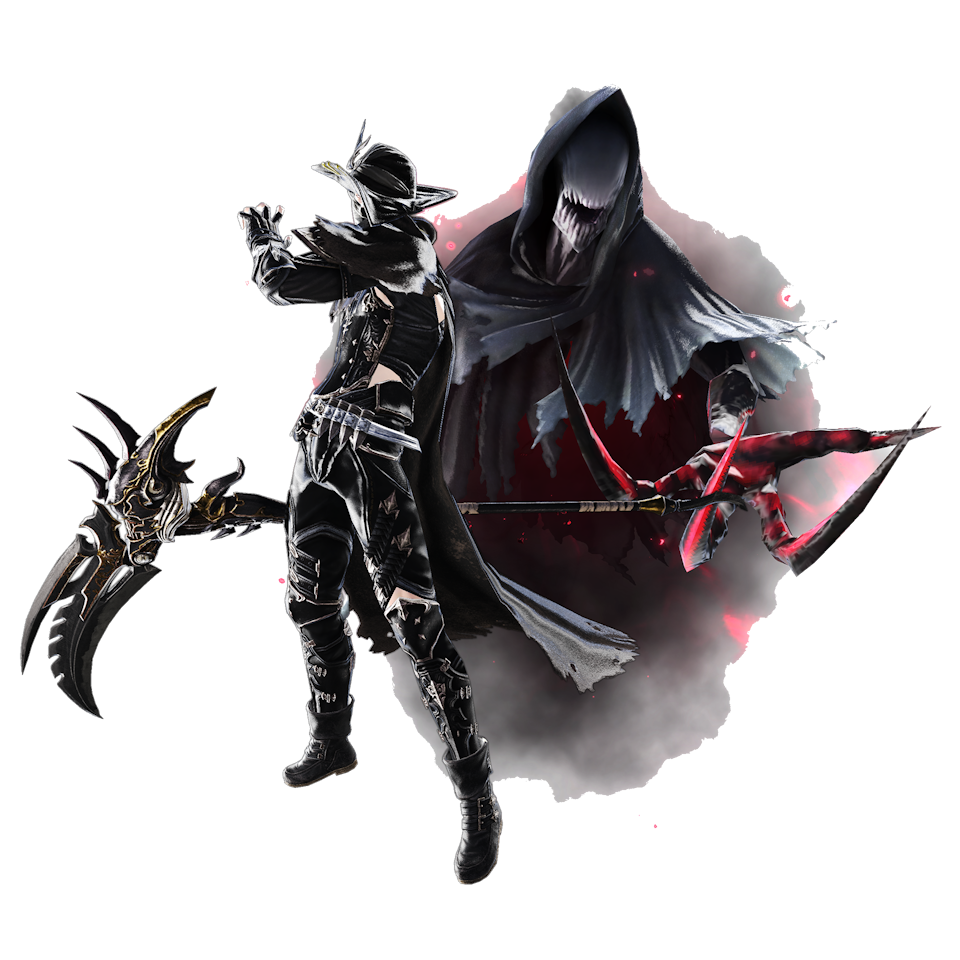Reapers have a fluid combat style, building up their Soul Gauge to summon their avatar for joint attacks. They blend swift scythe strikes with void-based magic for high damage output.
Unlock QuestPhysical Range DPS
Bard 
Bards are wanderers and storytellers, using their music to inspire allies and defeat enemies. Their songs carry the power of magic, weaving tales of heroism into reality.
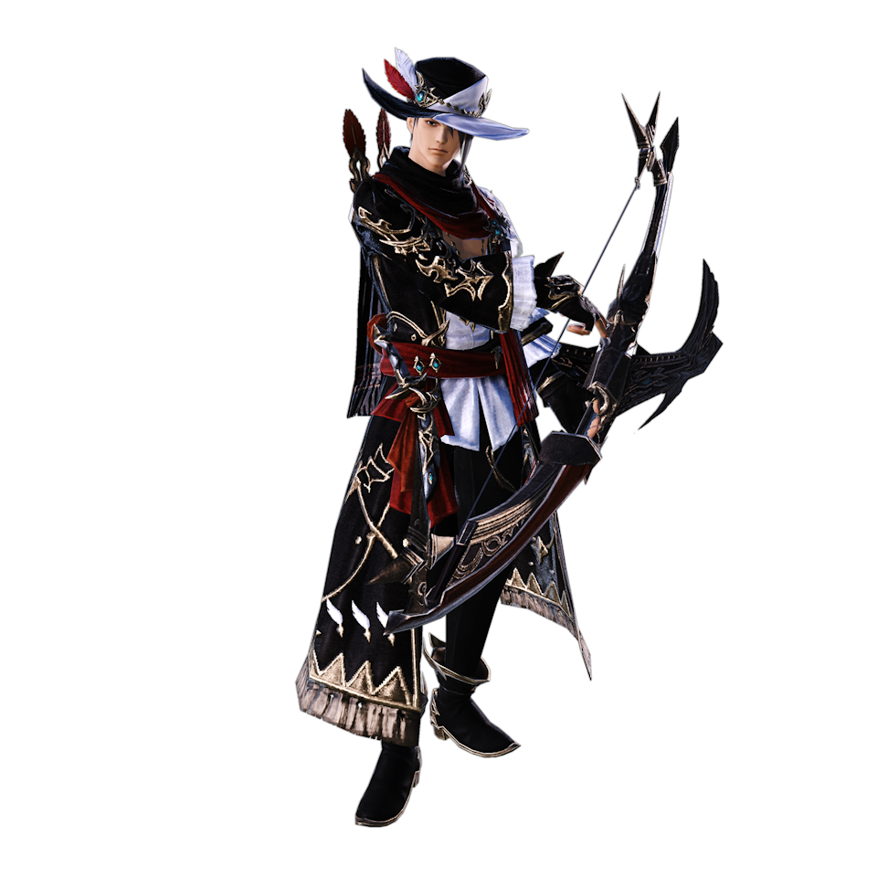Bards provide critical support to their party through songs that offer various buffs. They have a mobile playstyle, allowing them to deal consistent damage while moving.
Unlock QuestMachinist 
Machinists are engineers and inventors, using their technological prowess to wield firearms and mechanical devices in battle. They are innovators, constantly refining their creations for maximum efficiency.

Machinists focus on high burst damage with their firearms and deployable turrets. Their gameplay involves managing cooldowns and resources to maximize their output.
Unlock QuestDancer 
Dancers are both artists and fighters, using graceful movements to weave powerful attacks and buffs. They captivate friend and foe alike, turning the battlefield into their stage.
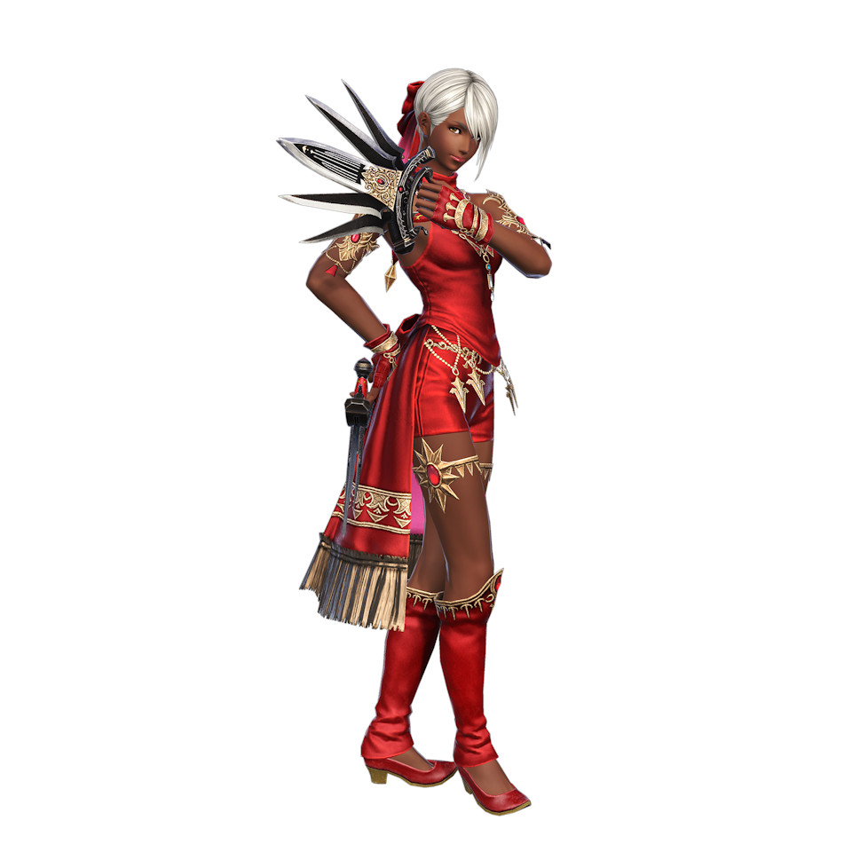Dancers have a unique playstyle that focuses on dancing steps to trigger buffs for themselves and a chosen dance partner. They excel in area damage and party support.
Unlock QuestMagical Range DPS
Black Mage 
Black Mages wield destructive magic, channeling the raw forces of fire, ice, and lightning. They seek to harness this power, often walking a fine line between control and chaos.
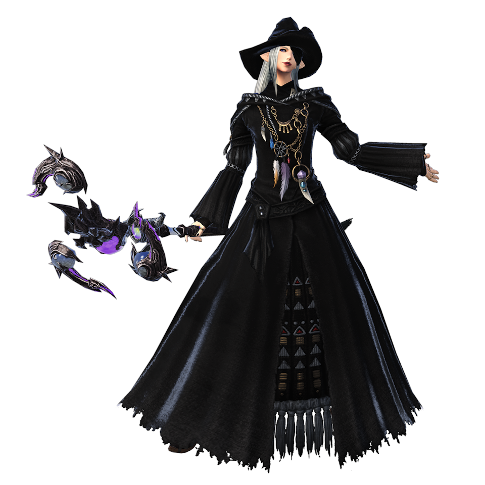Black Mages focus on a rotation of high-powered spells, balancing between Fire and Ice spells to manage their MP while maximizing damage. They require careful positioning due to their long cast times.
Unlock QuestSummoner 
Summoners call forth entities from other realms to aid them in battle. They are scholars of ancient magic, using their knowledge to bind and command powerful creatures.
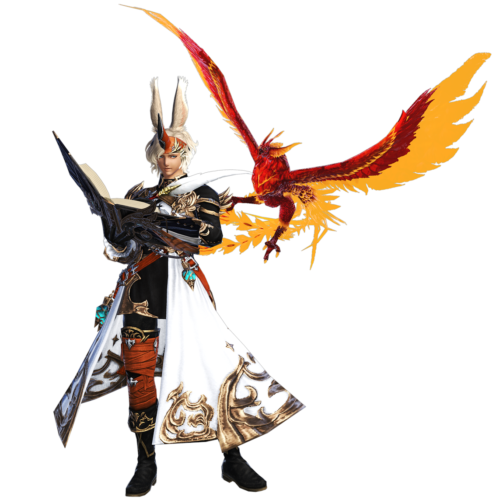Summoners have a versatile toolkit, capable of dealing damage over time, area attacks, and summoning avatars for powerful assaults. Their gameplay revolves around managing these summons and their abilities.
Unlock QuestRed Mage 
Red Mages balance the opposing forces of black and white magic, wielding both to achieve equilibrium. They are duelists, elegant and skilled in both swordplay and sorcery.

Red Mages have a dynamic playstyle, building up Black and White Mana to unleash powerful spells. They can quickly switch to melee attacks, making them highly versatile in combat.
Unlock QuestBlue Mage
Blue Mages learn from their enemies, absorbing their powers and turning them against them. They are seekers of knowledge, always on the hunt for new and exotic abilities.

Blue Mages have a unique system where they learn abilities from monsters. Their toolkit is highly varied, offering a wide range of spells for different situations. However, as a limited job, their endgame content is restricted.
Unlock Quest